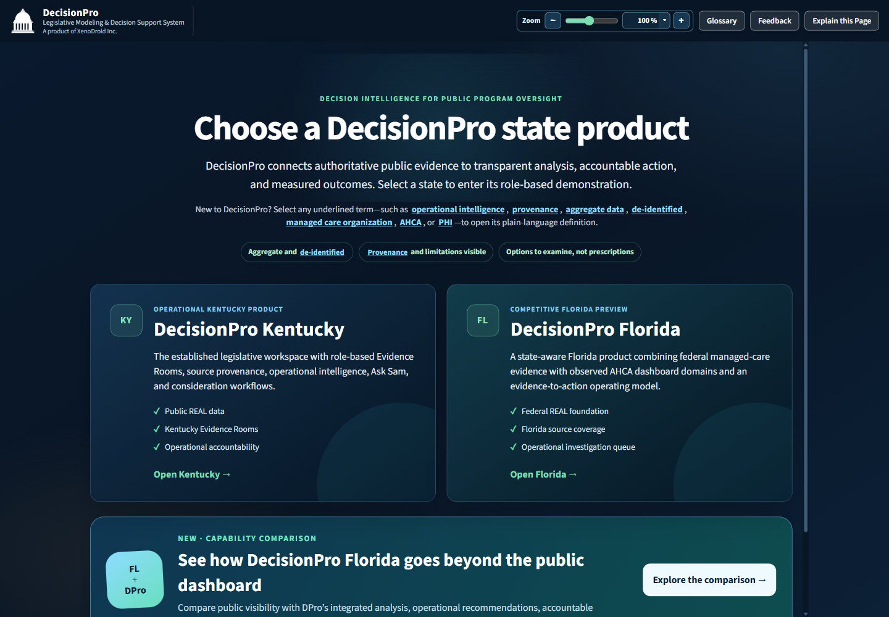
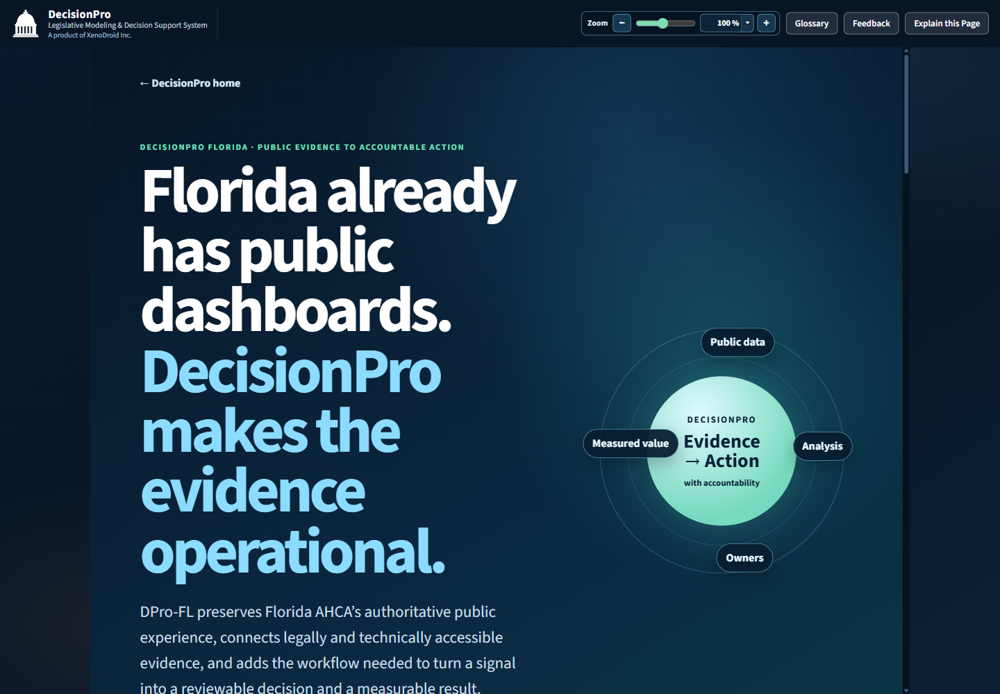
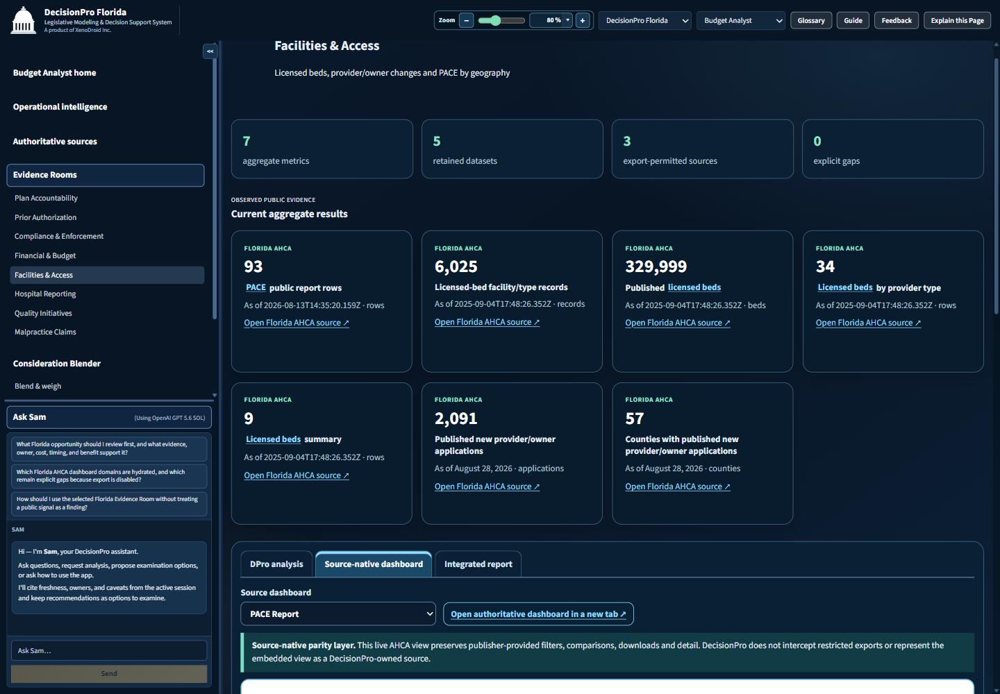
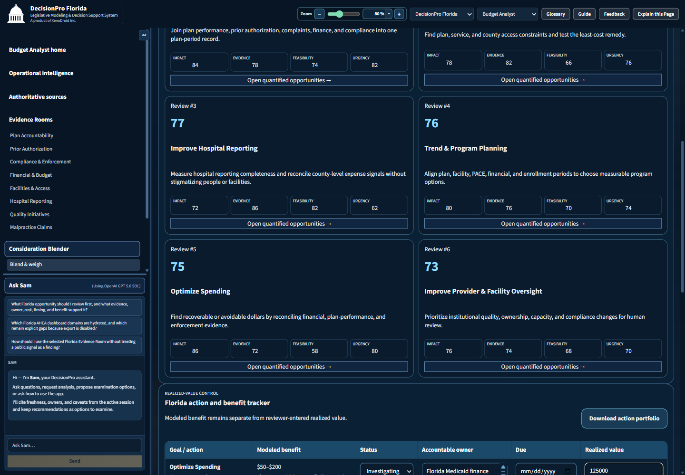

One platform · Multiple states · Accountable outcomes
Public dashboards show the evidence.
DecisionPro turns it into action.
Connect each state’s authoritative public data to governed analysis, quantified opportunities, accountable workpapers, legislative reporting, and measured value—without losing the source, caveat, or human judgment.
Aggregate & de-identifiedPublisher boundaries honoredOptions—not prescriptions
DecisionProEvidence
→ Actionmeasured responsibly
State dataAnalysisOwnersReportsValue→ Actionmeasured responsibly
The platform idea
State-specific evidence.
A consistent path to decisions.
DecisionPro is a shared product platform—not a collection of unrelated dashboard clones. Each state retains its own sources, definitions, periods, laws, agencies, and operational context while the user experience stays coherent.
Connect
Bring permitted public sources into a governed catalogue. Keep restricted or unreconciled publisher views reachable and explicitly labeled.
Understand
Use role-aware homes and Evidence Rooms to compare aggregate patterns with provenance, freshness, definitions, and limitations attached.
Operationalize
Turn signals into quantified opportunities, transformations, accountable owners, workpapers, due dates, and review priorities.
Measure
Separate modeled benefit from realized value and preserve the evidence needed to explain what changed and why.
Live state products
One DecisionPro. Two distinct public-program environments.
KY
DecisionPro Kentucky
Legislative modeling and decision support
Role-based Kentucky Medicaid intelligence spanning enrollment, spending, access, quality, contracts, providers, districts, operational recommendations, and recovery review.
- 9 Kentucky Evidence Rooms
- 6 quantified operational goals
- Recovery reconciliation workpaper
- Consideration Blender and legislative analysis
FL
DecisionPro Florida
Public dashboard evidence, fully operationalized
Connects Florida AHCA’s public dashboard suite and federal managed-care evidence to analysis, opportunities, workpapers, decision reports, owners, and benefit measurement.
- 8 Florida Evidence Rooms
- 11 AHCA dashboard domains connected
- Source-native plus normalized analysis
- Action and realized-value tracker

A scalable state portfolio
Choose the state. Keep the operating model.
The neutral landing experience makes DecisionPro a product family. State identity remains explicit in the URL, branding, sources, analytical rooms, recommendations, and walkthroughs.
Open the state selector →Beyond dashboard parity
Everything public stays reachable.
DecisionPro adds the decision layer.
DecisionPro complements authoritative state publishers. It does not claim ownership of their dashboards or bypass restrictions.
CapabilityPublic dashboard experienceDecisionPro multi-state platform
DiscoveryPublisher- and program-specific destinationsUnified state catalogue and Evidence Rooms with source-native links
AnalysisNative filters, charts, comparisons, and downloadsPreserves native interaction and adds normalized cross-source comparisons
GovernanceDefinitions and context remain with each publisherProvenance, freshness, content hashes, limitations, gaps, and reconciliation status
ActionSupports monitoring and investigationQuantified opportunities, transformations, owners, due dates, status, and workpapers
ReportingDashboard- and export-specific outputsIntegrated reports, executive briefs, option packs, and legislative framing
BenefitNo cross-dashboard realization workflow is assumedModeled benefit and realized value tracked separately
Inside the product
Full-spectrum reporting is a workflow, not a slogan.



Credibility by design
Strong decisions need visible boundaries.
DecisionPro keeps observed facts, analytical transformations, modeled opportunities, recommendations, and realized outcomes distinct. It is designed for aggregate or de-identified public-program oversight—not PHI or person-level Medicaid records.
- Publisher remains the source of record
- Export restrictions are enforced
- Gaps stay visible instead of being fabricated
- Modeled benefit is not called realized savings
- Human authority remains in control
The next state starts with the same discipline